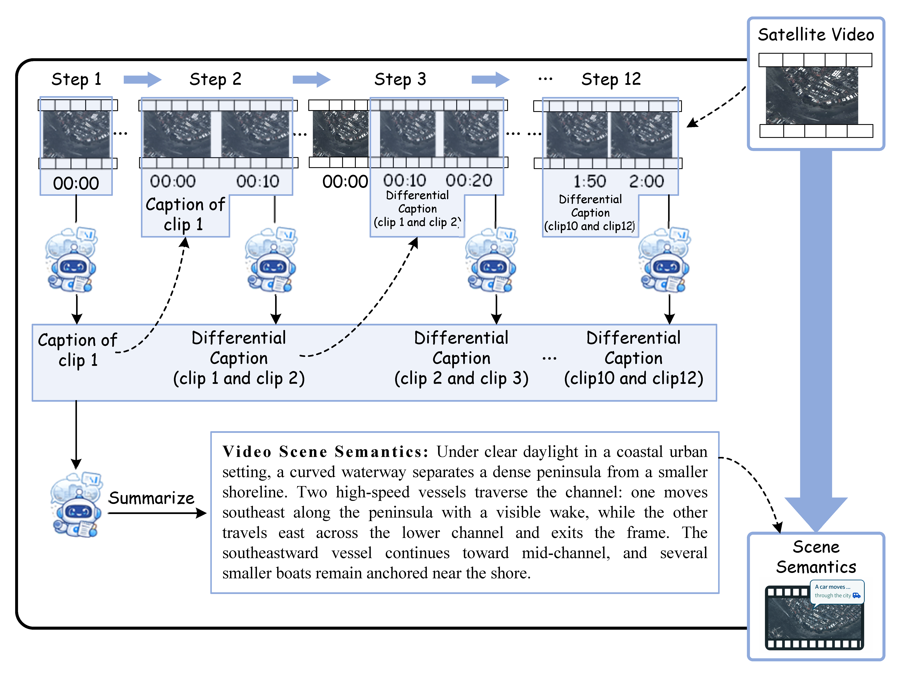
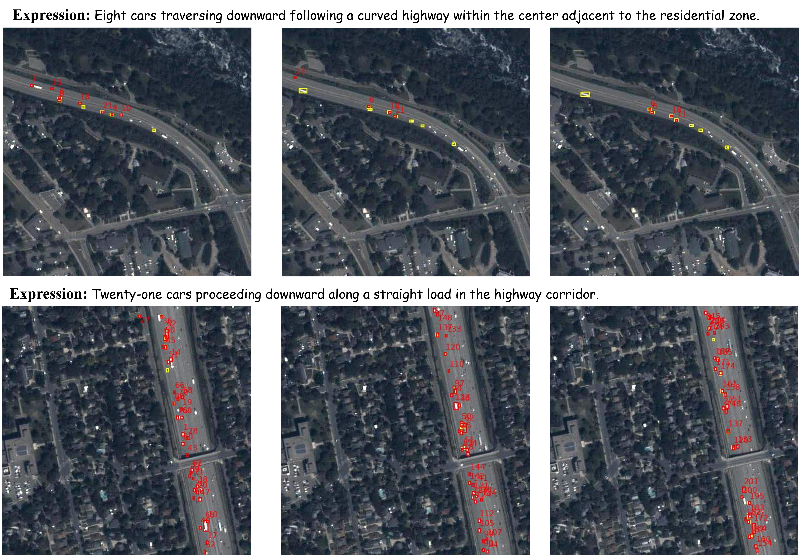
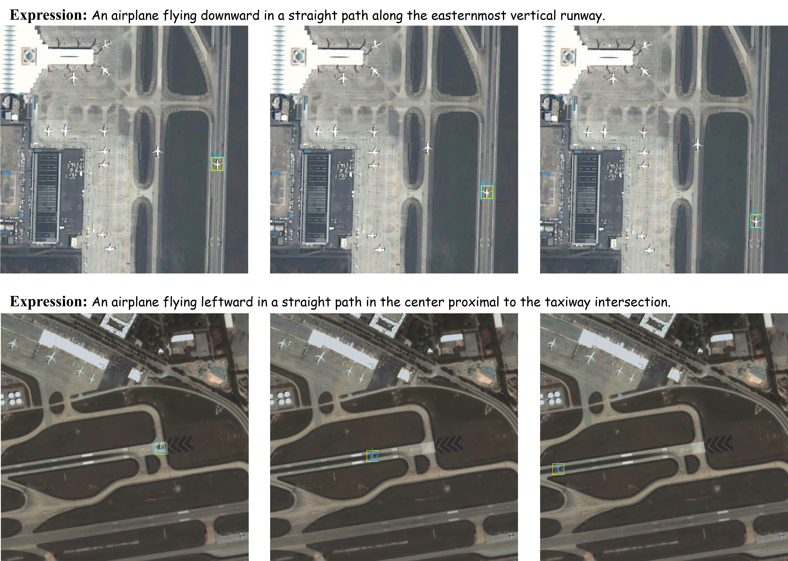
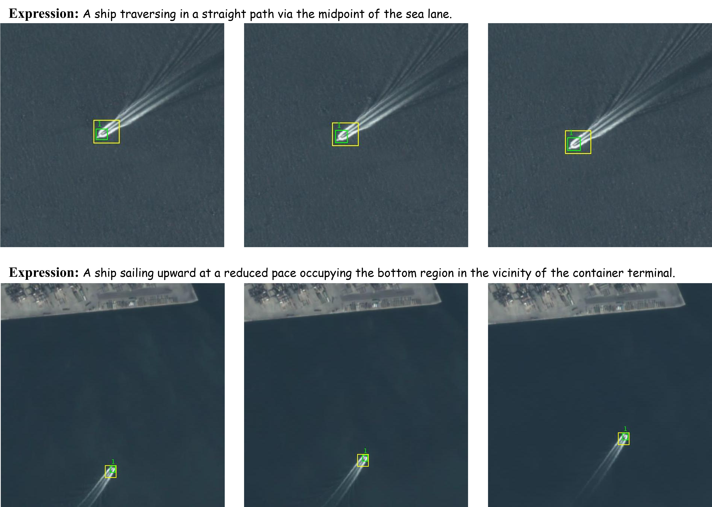

Abstract
Referring Multi-Object Tracking in satellite videos (RMOT-SV) aims to track multiple targets in remote sensing images using natural language descriptions, yet remains underexplored due to the lack of large scale and expressive datasets. Existing benchmarks are limited in scale, category diversity, and annotation richness, typically focusing on a few object classes with short and simple expressions. To address these limitations, we present SatRMOT, a large scale dataset for referring multi-object tracking in satellite videos, comprising 523 videos, 138k frames, and 19k referring expressions across four categories, with extensive annotations of tiny objects, particularly cars. A multi-agent collaborative framework is developed to enable richer annotations with multi-object descriptions, longer expressions, and fine-grained semantics involving motion, spatial relations, and contextual cues. Building upon this dataset, we propose Dual Refinement Track (DRTrack), which performs joint refinement in both visual and linguistic domains to better align small-object representations with rich referring expressions. Extensive experiments demonstrate the challenging nature of our dataset and the effectiveness of our method.
Category-wise Video Examples
Category-wise Image Examples

Category-wise image examples from SatRMOT. Each sample is annotated with a referring expression describing multiple targets using rich semantic cues, including object category, quantity, motion, spatial location, and structural context.
Dataset Statistics
Global Statistics Overview

The overview of dataset statistics for SatRMOT. The central rings summarize global statistics across all videos, while the surrounding panels present category-wise distributions. These statistics highlight the large-scale nature of the dataset, as well as its rich expression complexity and diverse target characteristics across different object categories.
Dataset Comparison and Additional Analysis
| Dataset | Total expressions | Vocabulary | Total frames | Total videos | Expression length | Category | Targets |
|---|---|---|---|---|---|---|---|
| Refer-KITTI | 818 | 49 | 6650 | 18 | 4.62 | 2 | 785 |
| Refer-KITTIv2 | 9800 | 617 | 7162 | 21 | 6.54 | 2 | 932 |
| Refer-Dance | 1900 | 25 | 67300 | 65 | 7.6 | 1 | 692 |
| RefSat | 556 | 80 | 31130 | 212 | 6.15 | 4 | 4588 |
| SatRMOT (ours) | 19463 | 1313 | 138137 | 523 | 13.73 | 4 | 21999 |
Comparison with existing referring tracking datasets. SatRMOT contains substantially more expressions, a richer vocabulary, more videos and frames, and many more annotated targets than previous benchmarks.
Expressions by Category
| RMOT-SV Dataset |
Car | Airplane | Ship | Train |
|---|---|---|---|---|
| RefSat | 5 | 309 | 178 | 49 |
| SatRMOT | 17850 | 696 | 832 | 85 |
Expression Attributes
| RMOT-SV Dataset |
Target Quantity |
Motion Direction |
Motion Status |
Spatial Location |
Structural Context |
|---|---|---|---|---|---|
| RefSat | × | × | ✓ | × | × |
| SatRMOT | ✓ | ✓ | ✓ | ✓ | ✓ |
Category-level expression counts and supported semantic attributes are summarized for RMOT-SV benchmarks.

Rich semantic coverage in SatRMOT expressions, including target cardinality, motion patterns, spatial relations, direction cues, and diverse scene context.
Multi-Agent Rich Referring Annotations
Overview

The overview of the proposed semi-automatic multi-agent framework for generating rich referring expressions in satellite videos. The pipeline coordinates multiple agents, including SCAP for global scene captioning, SEER for semantic entity extraction, CORE for context-aware referring expression generation, and AUTOLE for automated linguistic expansion, together with human-in-the-loop verification to ensure semantic correctness and annotation quality.
SCAP Agent

I am the SCAP agent, and my workflow is illustrated in the figure on the left. I process a satellite video by first splitting it into a sequence of temporal clips. For the opening clip, I generate an initial caption to capture the overall scene layout and target distribution. I then compare consecutive clips and produce differential descriptions that reflect how objects move and evolve over time. By progressively accumulating these intermediate observations, I finally build a coherent scene-level summary that provides a concise and temporally consistent understanding of the full video.
SEER Agent

I am the SEER agent, and my workflow is illustrated in the figure above. Starting from MOT annotations such as object IDs, bounding boxes, and category labels, I parse them into structured motion semantics. In this process, I iteratively call four specialized tools: Kalman Filtering to smooth trajectories, Direction-Angle Computation to infer motion direction and turning behavior, DBSCAN Clustering to group targets with similar dynamics, and Motion-Region Estimation to determine where each target moves within the scene. From these analyses, I construct motion profiles that describe each target in terms of its motion pattern, direction, speed, and region. Whenever multiple targets exhibit consistent motion behaviors, I automatically associate them into unified groups, enabling coherent multi-object descriptions grounded in their trajectories.
CORE Agent
I am the CORE agent. My role is to turn structured target attributes and global scene context into concise referring expressions. For each target, I combine its category, spatial region, motion pattern, and quantity with the overall scene description, then write a precise natural language query tailored for referring multi-object tracking. Controlled generation helps me keep every expression accurate, compact, and consistent with the surrounding context. In this way, I produce semantically grounded descriptions that bridge low-level motion cues and high-level language understanding.
AUTOLE Agent
I am the AutoLE agent. My role is to refine existing referring expressions by generating multiple linguistically diverse variants while preserving their original structure and meaning. For each input expression, I produce alternative phrasings that broaden the language space while keeping key cues such as motion, region, and object identity intact. In this way, I enrich the supervision signals used for referring multi-object tracking without changing the underlying semantics of the original descriptions.
Efficiency Advantages
Method Overview

The overview of DRTrack, a dual-refinement framework that enhances both visual and linguistic representations for referring multi-object tracking. It incorporates a Scale-aware Visual Refinement (SVR) module for multi-scale visual enhancement and a Linguistic-Conditioned Refinement (LCR) Decoder for language-guided query refinement, enabling accurate grounding and robust tracking in complex satellite scenes.
Experiments
Comparison with Existing Methods
| Method | HOTA | DetA | AssA | DetRe | DetPr | AssRe | AssPr | LocA |
|---|---|---|---|---|---|---|---|---|
| iKUN | 12.86 | 3.67 | 46.08 | 7.03 | 7.11 | 52.47 | 80.56 | 68.07 |
| TransRMOT | 21.56 | 9.19 | 50.61 | 17.06 | 16.61 | 60.13 | 75.17 | 74.98 |
| TempRMOT | 23.32 | 11.15 | 48.78 | 21.05 | 19.17 | 59.06 | 76.12 | 74.63 |
| DKGTrack | 25.63 | 12.79 | 51.39 | 24.68 | 20.97 | 60.61 | 75.49 | 75.01 |
| DRTrack (Ours) | 31.23 | 18.85 | 51.78 | 31.08 | 32.39 | 62.07 | 76.57 | 75.48 |
Implementation Details
During training, the text encoder remains fixed and only the rest of the network is updated. We optimize the model with AdamW, start from an initial learning rate of 1 × 10-4, and reduce it by a factor of 10 after the 40th epoch. For the objective design, the loss weights are set as αcls = 5, αbox = 2, αgiou = 2, and αref = 2. In the post-filtering stage, we keep target boxes with a confidence threshold of 0.3 and use a referring matching threshold of 0.4.
Qualitative Results on Cars

Qualitative visualization results for the car category. Groundtruth boxes are shown in yellow. Predicted boxes are drawn in red for cars.
Qualitative Results on Airplanes

Qualitative visualization results for the airplane category. Groundtruth boxes are shown in yellow. Predicted boxes are drawn in blue for airplanes.
Qualitative Results on Ships

Qualitative visualization results for the ship category. Groundtruth boxes are shown in yellow. Predicted boxes are drawn in green for ships.